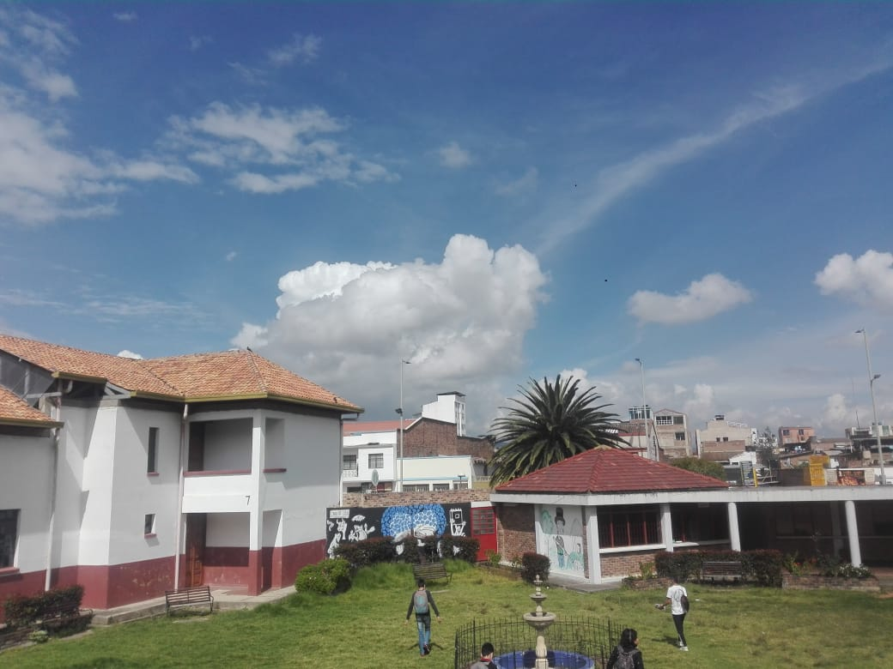

Historia
Nuestra institución nació como escuela rural en 1938, dando inicio a su construcción por la gestión del Concejo municipal de Bosa, que en esa época era un municipio cercano a Bogotá y se desarrollaba como sector agrícola e industrial, rico en historia, pues fue un lugar de pernoctación de personajes relevantes en acontecimientos patrios. En el año de 1940 se inaugura oficialmente como una escuela de educación unitaria, la cual consta de dos aulas y una vivienda para dos maestros. En las dos aulas se ensañaba a niños y niñas; en una de los cursos primero y segundo a cargo de uno de los docentes y en la otra tercero, cuarto y quinto a cargo del otro docente.
